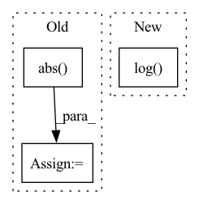

Pattern ID :10387
Before Change
wavs, _ = batch.sig
Xs = stft(wavs.data.cpu().numpy(), n_fft=1024, hop_length=512)
Xs = np.log(1 + np.abs( Xs) )
Xs = torch.Tensor(Xs).float().to(self.device)
// Concatenate labels (due to data augmentation)
if stage == sb.Stage.TRAIN and False:After Change
X_stft = self.modules.compute_stft(wavs)
X_stft_power = sb.processing.features.spectral_magnitude(X_stft, power=self.hparams.spec_mag_power)
X_stft_logpower = torch.log( X_stft_power + 1) .transpose(1, 2)
// Concatenate labels (due to data augmentation)
if stage == sb.Stage.TRAIN and False:In pattern: SUPERPATTERN
Frequency: 3
Non-data size: 3
Instances Fragment ID: 36322888
Project Name: speechbrain/speechbrain
Commit Name: 5141f8cfe46029b6dd2c051199291f4c21cae8e0
Time: 2022-11-20
Author: me@francescopaissan.it
File Name: recipes/ESC50/classification/train_interpreter.py
M Class Name: InterpreterESC50Brain
N Class Name: InterpreterESC50Brain
M Method Name: compute_objectives(4)
N Method Name: compute_objectives(4)
M Parent Class: sb.core.Brain
N Parent Class: sb.core.Brain
M File Name: recipes/ESC50/classification/train_interpreter.py
N File Name: recipes/ESC50/classification/train_interpreter.py
M Start Line: 147
M End Line: 173
N Start Line: 150
N End Line: 171
Before Change
loss = MultivariateNormalDistributionLoss()
target = loss.distribution_class(loc=mean, cov_diag=std**2, cov_factor=cov_factor).sample((n,))
if transformation in ["log", "log1p", "relu", "softplus"]:
target = target.abs()
target = target[:, 0]
normalizer = TorchNormalizer(center=center, transformation=transformation)
normalized_target = normalizer.fit_transform(target).view(1, -1)
target_scale = normalizer.get_parameters().unsqueeze(0)
scale = torch.ones_like(normalized_target) * normalized_target.std()
parameters = torch.concat(
[normalized_target[..., None], scale[..., None], torch.zeros((1, normalized_target.size(1), loss.rank))],
dim=-1,
)
if transformation in ["logit", "log", "log1p", "softplus", "relu", "logit"]:
with pytest.raises(AssertionError):
rescaled_parameters = loss.rescale_parameters(parameters, target_scale=target_scale, encoder=normalizer)
else:
rescaled_parameters = loss.rescale_parameters(parameters, target_scale=target_scale, encoder=normalizer)
samples = loss.sample(rescaled_parameters, 1)After Change
n = 100000
if transformation is not None and "log" in transformation:
mean = mean.log()
std = std / 1e4
loss = MultivariateNormalDistributionLoss()
target = loss.distribution_class(loc=mean, cov_diag=std**2, cov_factor=cov_factor).sample((n,)) Fragment ID: 36322894
Project Name: jdb78/pytorch-forecasting
Commit Name: 09eb7856fd61cd62c765376a0b1b2400fecb4243
Time: 2022-05-14
Author: beitner.jan@bcg.com
File Name: tests/test_metrics.py
M Class Name: AnonimousClass
N Class Name: AnonimousClass
M Method Name: test_MultivariateNormalDistributionLoss(2)
N Method Name: test_MultivariateNormalDistributionLoss(2)
M Parent Class:
N Parent Class:
M File Name: tests/test_metrics.py
N File Name: tests/test_metrics.py
M Start Line: 197
M End Line: 214
N Start Line: 192
N End Line: 205
Before Change
x = np.asarray(x)
x = np.divide(1, 1 + np.exp(-x))
log_J = np.log(np.abs( x - x ** 2) )
x *= (1 + 2 * fuzz)
x -= fuzz
return x, log_JAfter Change
Log Jacobian determinant.
x = np.divide(1, 1 + np.exp(-x))
log_j = np.log( x) + np.log1p(-x)
if fuzz:
x *= (1 + 2 * fuzz)
x -= fuzz Fragment ID: 36322892
Project Name: mj-will/nessai
Commit Name: efd0febbb8dabbe6855b918f21169437664f3acc
Time: 2021-08-23
Author: m.williams.4@research.gla.ac.uk
File Name: nessai/utils/rescaling.py
M Class Name: AnonimousClass
N Class Name: AnonimousClass
M Method Name: sigmoid(2)
N Method Name: sigmoid(2)
M Parent Class:
N Parent Class:
M File Name: nessai/utils/rescaling.py
N File Name: nessai/utils/rescaling.py
M Start Line: 300
M End Line: 305
N Start Line: 320
N End Line: 326